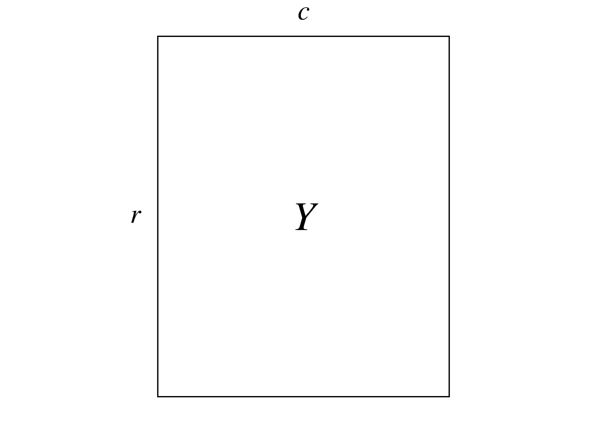
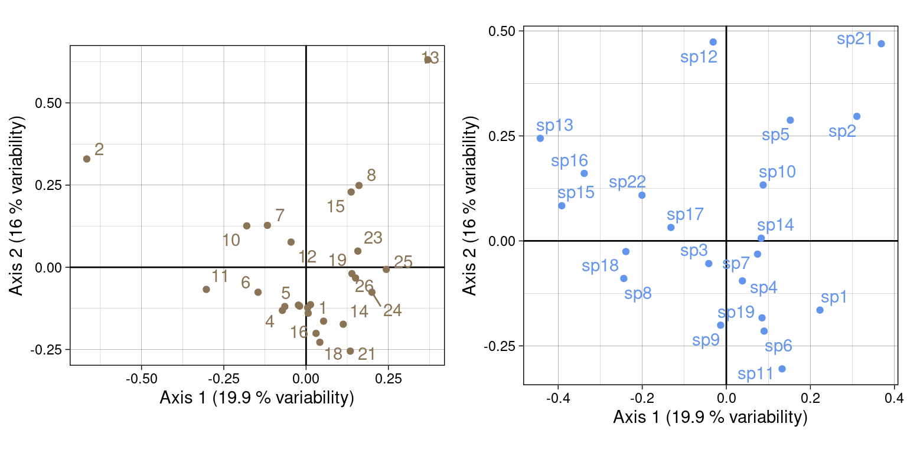
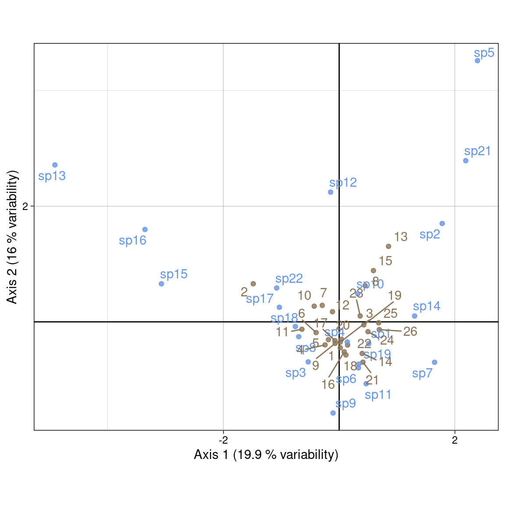
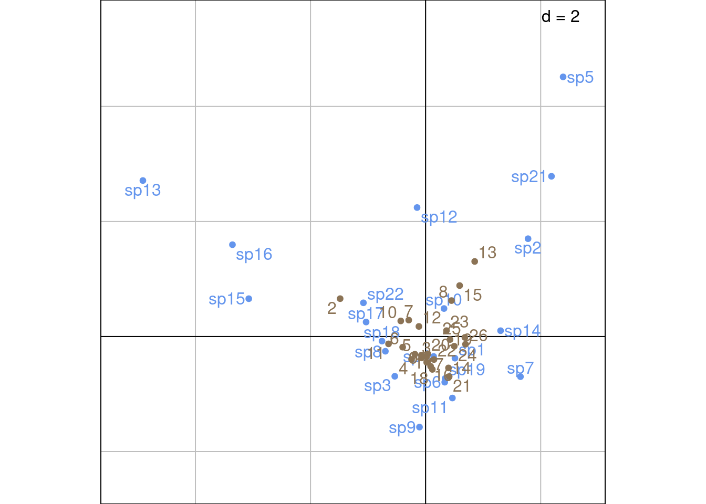
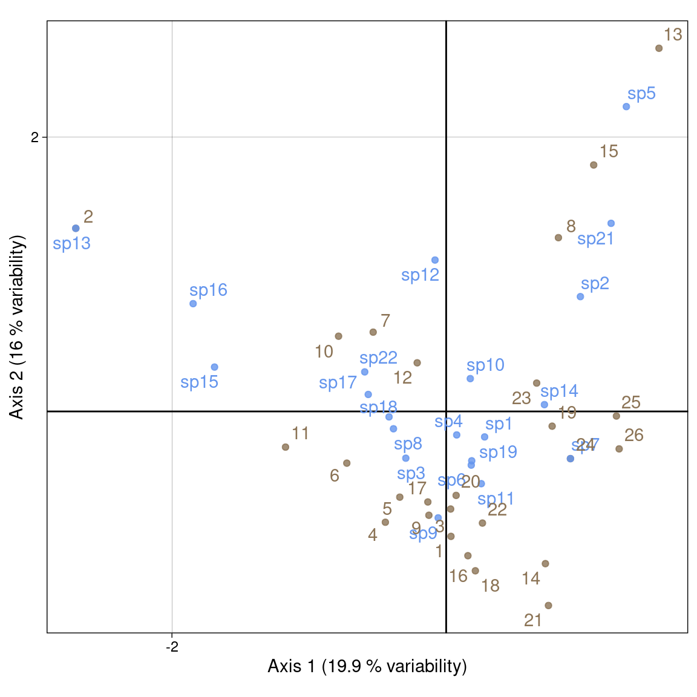
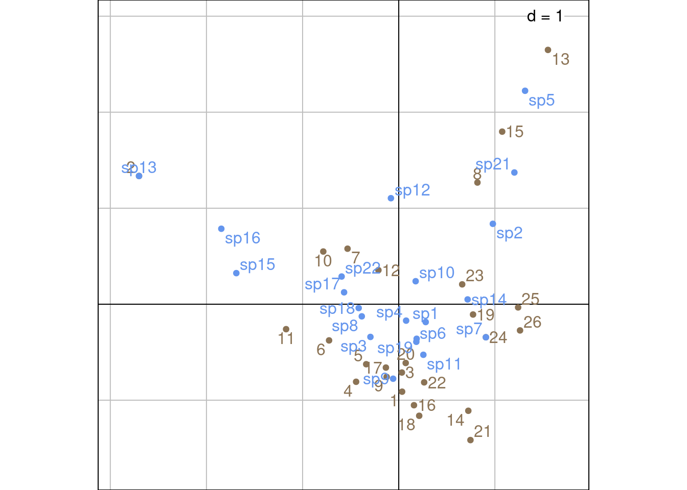
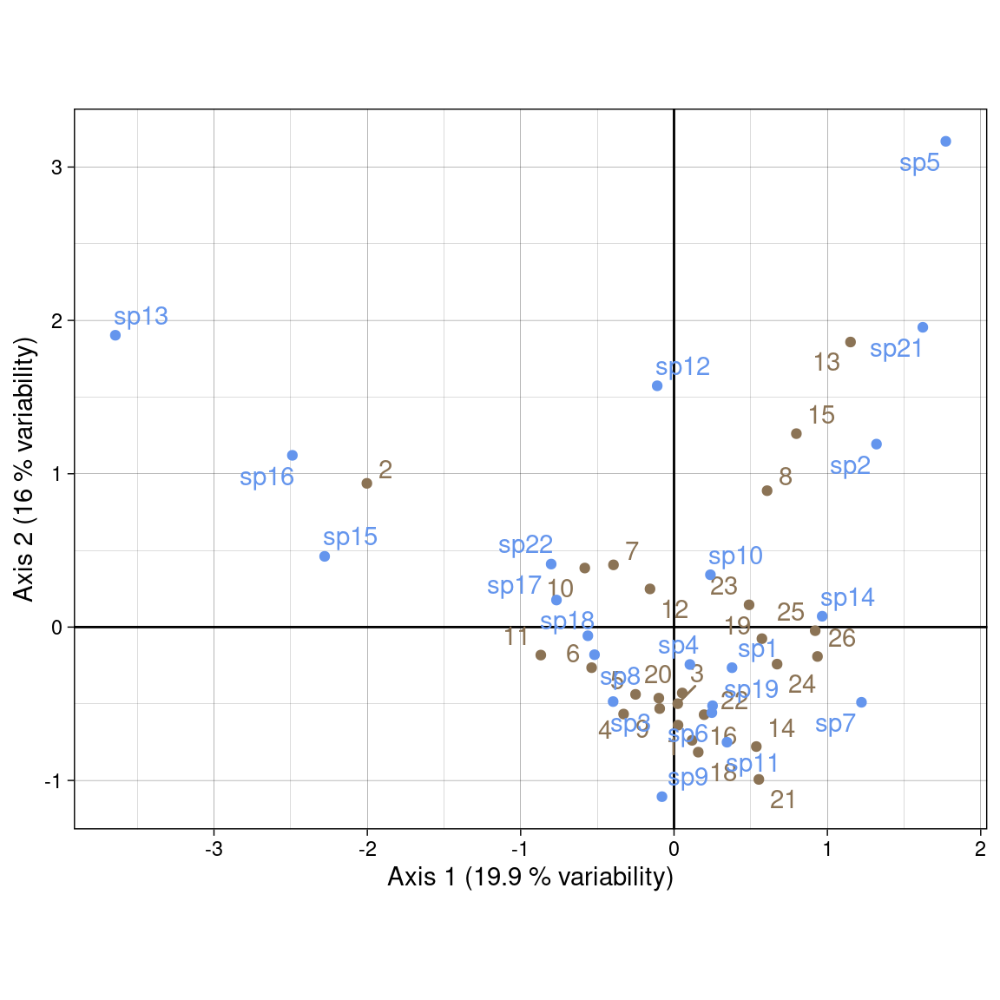
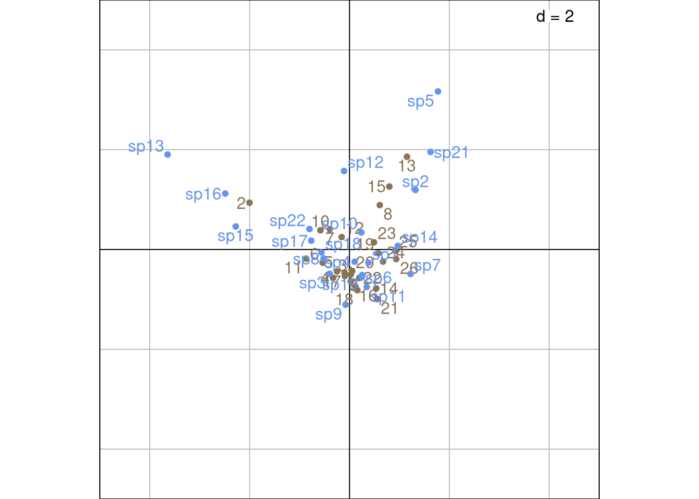
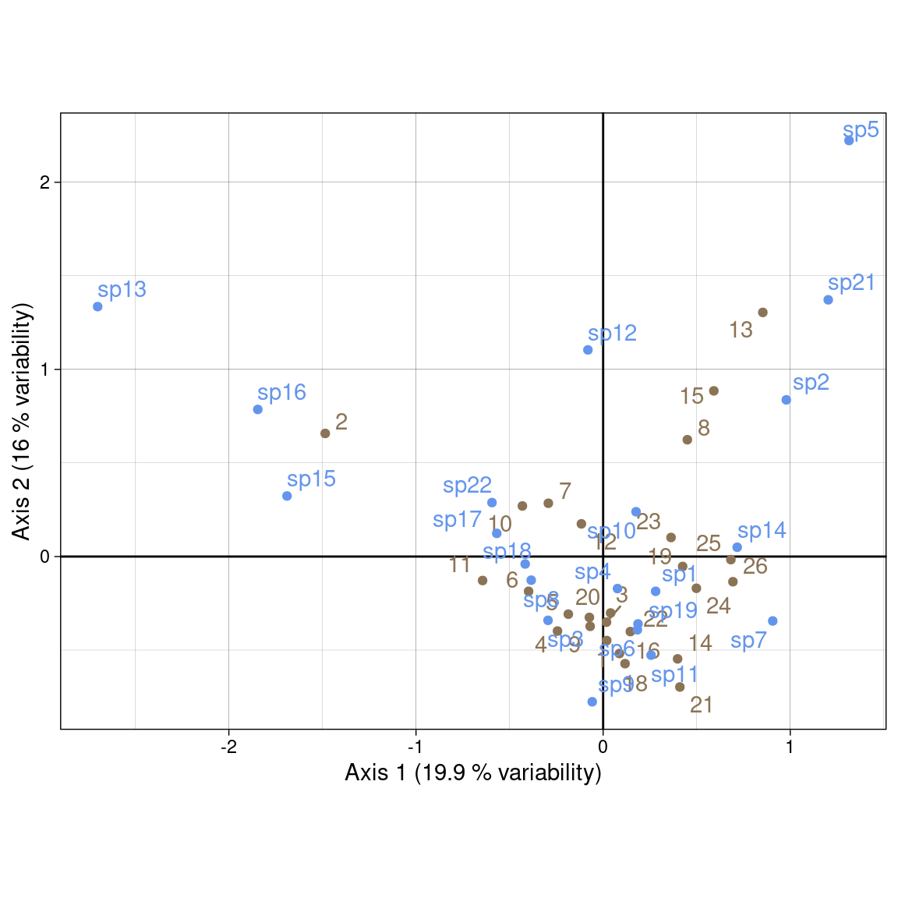
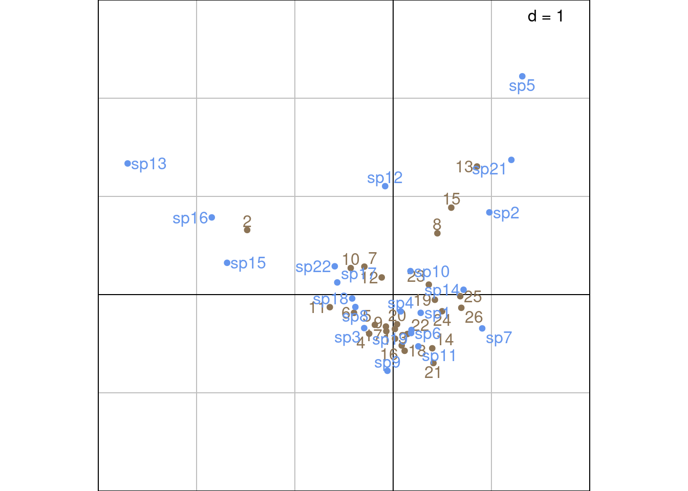

Code
# Paths
library(here)
# Multivariate analysis
library(ade4)
library(adegraphics)
# Matrix algebra
library(expm)
# Plots
library(gridExtra)
source(here("functions/plot.R"))The contents of this page relies heavily on Legendre and Legendre (2012).
Correspondence analysis (CA) was developed independently by several authors between the 1930s and 1960s. It has been mainly applied to analysis of ecological data tables (species \(\times\) environment) such as the data we will analyze here.
Notably, Hill discovered it in 1973 with an iterative method that he called reciprocal averaging. It involves ordering species with sites initially positioned randomly, reciprocally order sites with species, etc. This iterative procedure converges to reach the same results as what is achieved with CA’s first axis.
CA is designed to analyze contingency tables (count tables) such \(Y\):

Here, \(Y\) represents the abundance of different bird species (columns) at different sites (rows) in New Zealand.
Here is a preview of \(Y\) with our example dataset:
| sp1 | sp2 | sp3 | sp4 | sp5 | sp6 | sp7 | sp8 | sp9 | sp10 | sp11 | sp12 | sp13 | sp14 | sp15 | sp16 | sp17 | sp18 | sp19 | sp21 | sp22 |
|---|---|---|---|---|---|---|---|---|---|---|---|---|---|---|---|---|---|---|---|---|
| 1 | 0 | 1 | 1 | 0 | 1 | 0 | 2 | 0 | 1 | 1 | 0 | 0 | 0 | 0 | 0 | 0 | 0 | 1 | 0 | 0 |
| 2 | 0 | 0 | 2 | 0 | 1 | 0 | 5 | 0 | 2 | 0 | 2 | 4 | 0 | 3 | 3 | 0 | 3 | 1 | 0 | 2 |
| 5 | 0 | 0 | 2 | 0 | 1 | 0 | 2 | 0 | 1 | 2 | 0 | 0 | 0 | 0 | 0 | 0 | 3 | 2 | 0 | 1 |
| 3 | 0 | 0 | 0 | 0 | 1 | 0 | 4 | 1 | 0 | 1 | 0 | 0 | 0 | 0 | 0 | 0 | 2 | 0 | 0 | 1 |
| 5 | 0 | 0 | 1 | 0 | 1 | 0 | 2 | 0 | 0 | 3 | 0 | 0 | 0 | 0 | 1 | 0 | 3 | 1 | 0 | 1 |
| 1 | 0 | 0 | 1 | 0 | 2 | 0 | 3 | 1 | 2 | 1 | 0 | 0 | 0 | 1 | 0 | 1 | 2 | 2 | 0 | 3 |
| 4 | 0 | 0 | 0 | 0 | 2 | 0 | 4 | 0 | 2 | 0 | 4 | 0 | 0 | 0 | 0 | 1 | 5 | 0 | 0 | 2 |
| 2 | 0 | 0 | 1 | 0 | 2 | 0 | 0 | 0 | 0 | 1 | 1 | 0 | 0 | 0 | 0 | 0 | 5 | 1 | 5 | 1 |
| 4 | 0 | 0 | 0 | 0 | 0 | 0 | 2 | 0 | 0 | 3 | 0 | 0 | 0 | 0 | 0 | 1 | 1 | 0 | 0 | 1 |
| 2 | 0 | 1 | 5 | 0 | 0 | 0 | 5 | 0 | 1 | 1 | 4 | 0 | 0 | 0 | 1 | 2 | 2 | 0 | 0 | 2 |
| 2 | 0 | 0 | 2 | 0 | 1 | 0 | 5 | 0 | 2 | 2 | 0 | 0 | 0 | 4 | 0 | 1 | 10 | 3 | 0 | 1 |
| 4 | 0 | 0 | 0 | 0 | 1 | 0 | 4 | 0 | 2 | 2 | 4 | 0 | 0 | 0 | 0 | 2 | 1 | 2 | 0 | 1 |
| 5 | 5 | 0 | 0 | 1 | 1 | 0 | 1 | 0 | 3 | 0 | 5 | 0 | 0 | 0 | 0 | 0 | 0 | 1 | 5 | 1 |
| 4 | 0 | 0 | 1 | 0 | 2 | 0 | 0 | 0 | 1 | 2 | 0 | 0 | 0 | 0 | 0 | 0 | 0 | 2 | 0 | 0 |
| 3 | 0 | 0 | 0 | 1 | 0 | 0 | 0 | 0 | 3 | 0 | 1 | 0 | 0 | 0 | 0 | 0 | 0 | 0 | 0 | 0 |
| 3 | 0 | 0 | 0 | 0 | 5 | 0 | 4 | 0 | 1 | 2 | 0 | 0 | 0 | 0 | 0 | 0 | 1 | 2 | 0 | 0 |
| 4 | 0 | 1 | 1 | 0 | 1 | 0 | 3 | 1 | 2 | 0 | 0 | 0 | 0 | 0 | 0 | 0 | 2 | 0 | 0 | 0 |
| 5 | 0 | 0 | 1 | 0 | 1 | 0 | 3 | 2 | 1 | 2 | 0 | 0 | 0 | 0 | 0 | 0 | 1 | 3 | 0 | 0 |
| 4 | 2 | 0 | 1 | 0 | 0 | 0 | 2 | 0 | 2 | 2 | 0 | 0 | 1 | 0 | 0 | 0 | 1 | 1 | 0 | 0 |
| 4 | 0 | 0 | 1 | 0 | 2 | 0 | 2 | 2 | 2 | 1 | 1 | 0 | 0 | 0 | 0 | 0 | 2 | 0 | 0 | 0 |
| 5 | 0 | 0 | 1 | 0 | 4 | 0 | 0 | 0 | 0 | 4 | 0 | 0 | 0 | 0 | 0 | 0 | 0 | 2 | 0 | 0 |
| 5 | 1 | 0 | 3 | 0 | 2 | 0 | 2 | 1 | 0 | 2 | 0 | 0 | 0 | 0 | 0 | 0 | 3 | 1 | 0 | 0 |
| 3 | 5 | 0 | 4 | 0 | 2 | 0 | 5 | 0 | 4 | 2 | 0 | 0 | 1 | 0 | 0 | 0 | 2 | 0 | 0 | 0 |
| 5 | 2 | 0 | 7 | 0 | 1 | 1 | 0 | 0 | 4 | 2 | 0 | 0 | 0 | 0 | 0 | 0 | 0 | 2 | 0 | 0 |
| 6 | 0 | 0 | 2 | 0 | 1 | 0 | 0 | 0 | 1 | 3 | 0 | 0 | 0 | 0 | 0 | 0 | 0 | 3 | 3 | 0 |
| 3 | 0 | 0 | 0 | 0 | 1 | 0 | 0 | 0 | 0 | 1 | 0 | 0 | 0 | 0 | 0 | 0 | 0 | 1 | 1 | 0 |
More generally, CA can be used to analyze tables which are dimensionally homogeneous and contain no negative values.
CA preserves \(\chi^2\) distances \(D\) between rows and columns of the contingency table:
\[ D(x_1, x_2) = \sqrt{\sum_{j = 1}^p \frac{1}{y_{\cdot j}/y_{\cdot \cdot}}\left(\frac{y_{1j}}{y_{1\cdot}} - \frac{y_{2j}}{y_{2\cdot}}\right)^2} \]
Where \(x_1\) and \(x_2\) represent two items of the rows/columns. \(p\) is the number of rows (if \(x_1\) and \(x_2\) are items of columns) or columns else.
\(y_{\cdot j}\) represent either:
\(y_{\cdot \cdot}\) is the sum of all individuals of the table.
\(\frac{y_{1j}}{y_{1\cdot}}\) are relative frequencies of individuals per rows (if \(x_1\) and \(x_2\) are items of the rows) or columns.
For example, we compute the \(\chi^2\) distance between sp1 and sp2:
# Get total number of individuals in all sites
ytot <- sum(Y)
# Get how much each site contributed to the total count of species
y_j <- apply(Y, 2, FUN = function(x) x/sum(x))
sqrt( sum(1/(rowSums(Y)/ytot)*(y_j[, "sp1"] - y_j[, "sp2"])^2 ) )[1] 2.090546And between sites 1 and 2:
Given a data matrix \(Y\), we “center-scale” this matrix (\(P_0\)).
We can perform the SVD of \(P_0\):
\[ P_0 = U_0 \Delta V_0^\top \]
\(V_0\) (\(c \times c\)) contains the loadings of the columns (species) of the contingency table.
\(U_0\) (\(r \times c\)) contains the loadings of the rows (sites) of the contingency table.
There are \(k = \min(c-1, r-1)\) non-null eigenvalues. The CA eigenvalues are the squares of the SVD eigenvalues: \(\Lambda = \Delta^2\).
Also, there is a link between \(U_0\) and \(V_0\) given by the following transition formulae:
\[ \left\{ \begin{array}{ll} U_0 &= P_0 V_0 \Lambda^{-1/2}\\ V_0 &= P_0^\top U_0 \Lambda^{-1/2}\\ \end{array} \right. \]
Finally, we define the following transformations of \(U_0\) and \(V_0\) (that have variance 1 and correspond to l1 and c1):
\[ \left\{ \begin{array}{ll} U &= D_r^{-1/2} U_0\\ V &= D_c^{-1/2} V_0\\ \end{array} \right. \]
Let’s perform a CA with ade4 to check results later.
We transform values of the contingency table \(Y\) with counts \(y_{ij}\) into proportions \(p_{ij}\):
\[ P = Y/y_{\cdot \cdot} \]
With our example data:
Then we transform values of this table into a quantity related to \(\chi^2\) values \(P_0\):
\[ P_0 = [p_{0ij}] = \left[ \frac{p_{ij} - p_{i\cdot} p_{\cdot j}}{\sqrt{p_{i\cdot} p_{\cdot j}}} \right] \]
# Initialize P0 matrix
P0 <- matrix(ncol = ncol(Y), nrow = nrow(Y))
colnames(P0) <- colnames(Y)
rownames(P0) <- rownames(Y)
for(i in 1:nrow(Y)) { # For each row
for (j in 1:ncol(Y)) { # For each column
# Do the sum
pi_ <- sum(P[i, ])
p_j <- sum(P[, j])
# Compute the transformation
P0[i, j] <- (P[i, j] - (pi_*p_j))/sqrt(pi_*p_j)
}
}We could also do this by matrix multiplication:
\[ P_0 = D_r^{-1/2} (P - p_{i\cdot} p_{\cdot j}^\top) D_c^{-1/2} \]
where \(p_{i\cdot}\) and \(p_{\cdot j}\) are the rows and columns sums vectors (respectively) and \(D_r\) and \(D_c\) are the associated diagonal matrices (respectively).
# Define weights matrices
Dr <- diag(rowSums(P))
Dc <- diag(colSums(P))
# Also define a variable for just the sums for easier manipulation
dr <- rowSums(P)
dc <- colSums(P)
# Compute P0 with this computation
P0_mat <- diag(dr^(-1/2)) %*% (P - (dr %*% t(dc))) %*% diag(dc^(-1/2))
all((P0_mat/P0 - 1) < zero) # It works[1] TRUEThe \(p_{0ij}\) values are equal to the \(\chi\) values, a constant apart: \(p_{0ij} = \chi_{ij}/\sqrt{y_{\cdot \cdot}}\).
We perform the SVD of \(P_0\):
\[ P_0 = U \Delta V_0^\top \]
Where \(P_0\) is \(r \times c\), \(U_0\) is \(r \times c\), \(\Delta\) is a \(c \times c\) diagonal matrix (assuming \(r \geq c\); the table can be transposed to meet this condition) and \(V_0\) is \(c \times c\).
Note that the last eigenvalue of this SVD will always be null (due to the centering).
This SVD is equivalent to a diagonalization: with the SVD, we can rewrite \(P_0^\top P_0\):
\[ P_0^\top P_0 = V_0 \Delta^\top U_0^\top U_0 \Delta V_0^\top \]
We have \(U_0^\top U_0 = I\) (because \(U_0\) is orthonormal), so:
\[ P_0^\top P_0 = V_0 \Delta^\top \Delta V_0^\top \]
If we rewrite \(\Delta^\top \Delta\) as \(\Lambda\) (so \(\Delta = \Lambda^{1/2}\)), and since \(V_0^\top = V_0^{-1}\) (\(V_0\) is orthonormal), then we can write this as a diagonalization:
\[ P_0^\top P_0 = V_0 \Lambda V_0^{-1} \]
# Diagonalize P0^t P0 ---
dg1 <- eigen(t(P0) %*% P0)
# Eigenvalues are equal to the square roots of SVD eigenvalues
all((dg1$values - lambda) < zero)[1] TRUE[1] TRUESimilarly, we can rewrite \(P_0 P_0^\top\):
\[ P_0 P_0^\top = U_0 \Lambda U_0^{-1} \]
In Carroll, Green, and Schaffer (1986), CA is defined as the SVD of matrix \(H\) defined as:
\[ H = D(y_{i\cdot})^{-1/2} Y D(y_{\cdot j})^{-1/2} \]
Where \(D(y_{i \cdot})\) and \(D(y_{\cdot j})\) are the equivalent of \(D_r\) and \(D_c\) for matrix \(Y\).
We compute this matrix and compare the results with the SVD of \(P_0\).
# Compute H with the formula from Caroll
H <- diag(dyi_^(-1/2)) %*% Y %*% diag(dy_j^(-1/2))
res <- H/P0
all((res - 1) < zero) # It is not equal to P0[1] FALSE# We try to center it:
H_centered <- diag(dyi_^(-1/2)) %*% (Y - (dyi_ %*% t(dy_j))) %*% diag(dy_j^(-1/2))
res <- H_centered/P0
all((res - 1) < zero) # Not equal[1] FALSEWe compare the SVDs of \(H\) and \(P_0\): they give the same value.
# SVD of H
svH <- svd(H)
# Eigenvalues are the same, except for the first eigenvalue equal to one
res <- svH$d[2:(k+1)]/delta[1:k]
all((res - 1) < zero)[1] TRUE# Eigenvectors are the same (but for the first one)
res <- svH$u[, 2:(k+1)]/U0[, 1:k]
all((res - 1) < zero)[1] TRUE[1] TRUENB: \(P_0\) is not equal to \(H\) defined in Carroll, Green, and Schaffer (1987). But they do not center the matrix, so the first eigenvalue is one and the rest are the same.
We have the following transition formulae between \(U_0\) and \(V_0\):
\[ \left\{ \begin{array}{ll} U_0 &= P_0 V_0 \Lambda^{-1/2}\\ V_0 &= P_0^\top U_0 \Lambda^{-1/2}\\ \end{array} \right. \]
We define weighted versions of \(U_0\) and \(V_0\):
\[ \left\{ \begin{array}{ll} U &= D_r^{-1/2} U_0\\ V &= D_c^{-1/2} V_0\\ \end{array} \right. \tag{1}\]
These vectors have the property to be of variance 1 (when weighted by \(D_r\) and \(D_c\)): it is easier to interpret than vectors of norm 1 like \(U_0\) and \(V_0\).
# Variance of columns vectors for columns
varV <- apply(V, 2, varwt, wt = dc)
res <- varV[1:k]/1
all(res - 1 < zero)[1] TRUE# Variance of columns vectors for rows
varU <- apply(U, 2, varwt, wt = dr)
res <- varU[1:k]/1
all(res - 1 < zero)[1] TRUEWe check that these are equal to the l1 and c1 of CA:
To plot rows and columns on separate plots, one can plot the eigenvectors \(U_0\) (rows = sites) and \(V_0\) (columns = species). But in data analyses, the weighted vectors \(U\) and \(V\) are more commonly used Equation 1.
To plot columns and rows individuals on the same biplot, different scalings have been proposed. For sites (rows), these scalings are equal to \(S_\alpha = U \Lambda^{\alpha/2}\) and for species (columns), \(S_\alpha = V \Lambda^{(1-\alpha)/2}\). (with \(\alpha =\) 1, 0 or 1/2).
Scaling type 1 (\(\alpha = 1\)): this scaling preserves the distances between rows. Rows (sites) are represented with \(U^\star = U \Lambda^{1/2}\) and species (columns) with \(V\).
Scaling type 2 (\(\alpha = 0\)): this scaling preserves distances between columns. Rows (sites) are represented with \(U\) and species (columns) with \(V^\star = V \Lambda^{1/2}\).
Scaling type 3 (\(\alpha = 1/2\)): this scaling is a compromise between scalings type 1 and 2. Rows (sites) are represented with \(\hat{S}_3 = U \Lambda^{1/4}\) and species (columns) with \(S_3 = V \Lambda^{1/4}\).
As noted in Carroll, Green, and Schaffer (1987), if we plot distances of different scalings on the same biplot, we cannot interpret between-sets distances, but within-sets distances are still be interpretable. But this type of interpretation is often attempted with scaling type 4 (described below), and this scaling is what Carroll, Green, and Schaffer (1987) criticize.
One can represent the eigenvectors \(U_0\) and \(V_0\) (or \(U\) and \(V\)) on separate plots.
\(U_0\) and \(V_0\):

\(U\) and \(V\):
This scaling preserves the row \(\chi^2\) distances and is useful to interpret distances between row individuals (sites). In this scaling, the rows individuals (sites) are positioned at the barycentre of the corresponding column (species) individuals.
For that, we use:
lic1We check that \(U^\star\) corresponds to the li of CA:
These scalings correspond to fixed variances for rows and columns. With scaling type 1, variance of the columns is fixed at one (corresponds to c1) and variance of the rows correspond to the eigenvalues (corresponds to li).
# Variance of columns vectors for rows
varUstar <- apply(Ustar, 2, varwt, wt = ca$lw)
res <- varUstar[1:k]/ca$eig
all(res -1 < zero)[1] TRUEPlot with our coordinates:

Plot with ade4:

Other plotting method with ade4:
\(U^\star\) (sites scores) can also be computed from the species scores using weighted averaging, since there is a correspondence between \(V_0\) and \(U_0\). This shows better the relationship between sites and species scores (sites are at the barycentre of their species with this scaling).
\(U^\star\) can be expressed by weighted averaging using the following formulas:
\[ U^\star = \left\{ \begin{array}{ll} D_r^{-1/2} P_0 V_0 \qquad &\text{(from } V_0 \text{)}\\ D_r^{-1/2} P_0 D_c^{1/2} V \qquad &\text{(from } V \text{)}\\ D_r^{-1} P V \qquad &\text{(from } V \text{ and } P \text{)}\\ \end{array} \right. \tag{2}\]
# Compute sites coordinates using weighted averaging
# With V0
Ustar_wa <- diag(dr^(-1/2)) %*% P0 %*% V0
res <- Ustar_wa/Ustar
all(res[, 1:k] - 1 < zero)[1] TRUEThis preserves \(\chi^2\) distances between species on the plot. Here, species are positioned at the centroid of sites.
We use:
We check that \(V^\star\) corresponds to the co of CA:
These scalings correspond to fixed variances for rows and columns. With scaling type 2, variance of the rows is fixed at one (corresponds to l1) and variance of the columns correspond to the eigenvalues (corresponds to co).
# Variance of columns vectors for rows
varA <- apply(Vstar, 2, varwt, wt = ca$cw)
res <- varA[1:k]/ca$eig
all(res -1 < zero)[1] TRUEPlot with our coordinates:

Plot with ade4:

Other plotting method with ade4:
Like \(U^\star\), \(V^\star\) (species scores) can also be computed from the sites scores. This shows better the relationship between species and sites scores (species are at the barycentre of their sites with this scaling).
\[ V^\star = \left\{ \begin{array}{ll} D_c^{-1/2} P_0^\top U_0 \qquad &\text{(from } U_0 \text{)}\\ D_c^{-1/2} P_0^\top D_r^{1/2} U \qquad &\text{(from } U \text{)}\\ D_c^{-1} P U^\top \qquad &\text{(from } U \text{ and } P \text{)}\\ \end{array} \right. \tag{3}\]
It is a compromise between scalings 1 and 2. It preserves none of the \(\chi^2\) distances.
We use:
Plot with our values:

Plot with ade4 values:
Sr_ade4 <- as.matrix(ca$l1) %*% diag(ca$eig^(1/4))
Sc_ade4 <- as.matrix(ca$c1) %*% diag(ca$eig^(1/4))
s.label(Sr_ade4,
ylim = c(-5, 5),
xlim = c(-5, 5),
ppoints.col = params$colsite,
plabels.col = params$colsite,
plabels.optim = TRUE)
s.label(Sc_ade4,
ppoints.col = params$colspp,
plabels.col = params$colspp,
plabels.optim = TRUE,
add = TRUE)
Use \(U^\star\) (sites) and \(V^\star\) (species). Then, both \(\chi^2\) distances are preserved. It is useful for a table crossing two factors.
Plot with our values:

Plot with ade4 values:

Other ade4 method:
Using the “transition formula” defined in Equation 2 and Equation 3, we can relate the ordination of rows (sites) (\(U\)) to the ordination of columns (species) (\(V\)) by expressing it as a weighted average of the other dimensions’ individuals.
For instance, the sites coordinates \(U^\star\) (weighted average) represent the mean of the coordinates of species present in this site. The species coordinates \(V^\star\) (weighted average) represent the mean of the coordinates of sites that this species is present in.
The eigenvalue \(\lambda_h\) is a measure of the correlation of the rows and columns ordinations along axis \(h\).
If species have a unimodal (bell-shaped) response along the gradient defined by the sites ordination along a given axis, then their position should be close to their niche optimum.
Depending on he position of, say, species, in the multivariate space, there are several interpretations:
Rare species are generally not very interesting because they are exceptions, not a general tendency. So some authors propose strategies to remove them, notably an iterative procedure. First do the complete CA, then remove the species seen one, twice… etc. Note the total inertia and the eigenvalues. When there is a jump, stop.
When there is a succession of species, along an hypothetical gradient, the CA may lead to an arch shape. There are techniques to detrend it, but knowing how to interpret this effect is probably more important.